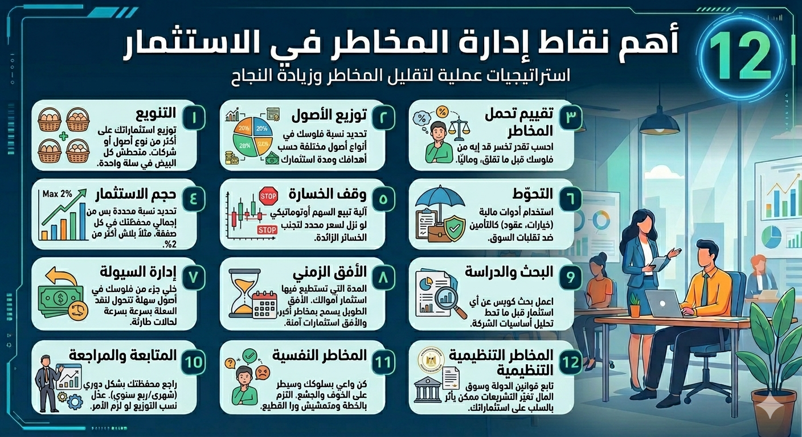

يعني إيه إدارة مخاطر؟
الاستثمار ممكن ينمّي ثروتك يا باشا، بس في مخاطرة دايمًا موجودة إنك تخسر فلوس. إدارة المخاطر يعني ببساطة إنك تخطط وتراقب استثماراتك بحيث تقلل الخسارة وتحافظ على رأس المال.
يعني قبل ما تحط فلوسك في أي حاجة، حاول تعرف إيه المخاطر اللي ممكن تواجهك (زي انخفاض سعر سهم أو هزة في السوق)، وخلي عندك استراتيجية مصممة تقلل آثار المخاطر دي.
تنبيه مهم: لو حصل هزّة مفاجئة في السوق، إدارة المخاطر الصح هتخلينا نوقف نزيف الفلوس ونحافظ على رأس المال بدل ما نندم بعدين.
التنويع (Diversification)
إيه هو؟ يعني توزيع استثماراتك على أكتر من نوع من الأصول أو شركات. بمعنى تاني، متحطش كل البيض في سلة واحدة.
ليه مهم؟ لو كل فلوسك في سهم واحد ونزل فجأة، هتخسر كتير. لكن لو قسمتها على شركات مختلفة (ومن قطاعات مختلفة)، حتى لو سهم واحد وقع، التاني ممكن يعوّض عنه.
تشبيه بسيط: الفلاح بيزرع أكتر من محصول في الأرض. لو مطرة أو حشرة ضربت القمح، الذرة أو البطاطس ممكن تنجو وتعوض جزء من خسارته. التنويع في الزراعة بيشبه تنويع المحفظة.
توزيع الأصول (Asset Allocation)
إيه هو؟ يعني تحدد نسبة فلوسك اللي تحطها في أنواع أصول مختلفة زي:
- الأسهم: عوائد عالية لكن مخاطرة عالية
- السندات: عوائد أقل وأكثر استقرار
- النقد: استقرار تام لكن عائد قليل
مثال: ممكن تقول: 50% في أسهم، 30% في سندات، 20% نقد. التقسيمة دي على حسب أهدافك ومدة استثمارك. لو قريب على سن التقاعد، هتزود نسب السندات عشان تقلل التقلب.
تقييم تحمل المخاطر (Risk Tolerance)
إيه هو؟ يعني تبص على نفسك وتحسب إنت تقدر تخسر قد إيه من فلوسك قبل ما تقلق.
لو معاك فلوس كتير ومش هتحتاجها قريب، ممكن تاخد مخاطرة أكبر (عشان وقتك طويل والسوق ممكن يرجع تاني). لو فلوسك قليلة ومحتاجها بسرعة، يبقى لازم تلعب بأمان أكتر.
سؤال مهم: هل إنت قادر نفسيًا تتفرج على انهيار الأسعار ولا لأ؟ ده بيأثر على خطتك.
حجم الاستثمار (Position Sizing)
إيه هو؟ يعني لما تحط فلوس في صفقة أو سهم، تحط نسبة محددة بس من إجمالي محفظتك. مثلاً بلاش تخاطر بأكتر من 2% من المحفظة في صفقة واحدة.
إزاي بتحدد ده؟ بتشوف قد إيه ممكن تخسر (مثلاً 1000 جنيه)، وبعدين تقسمها على الفرق بين سعر الشراء وقف-الخسارة اللي هتحطه. بكده لو الصفقة خاسرة، مش هتفقد أكتر من اللي حضرتك واكله.
تشبيه: زي ميزانية البيت - ما تحطش كل مصاريف البيت على طباخ واحد. بنوزّع المرتب بين الأكل، الإيجار، الفواتير، و"صندوق طوارئ".
وقف الخسارة (Stop-Loss Orders)
إيه هو؟ بتقول للبورصة: "لو نزل سعر السهم لـ سعر محدد، باعه أوتوماتيكي". يعني بتحط حد أقصى للخسارة.
مثال: اشتريت سهم بـ 10 جنيه وحطيت وقف-خسارة عند 9 جنيه. في حالة الهبوط يتم البيع على 9. حتى لو السوق هبط جامد مفاجئ، هتخرج على سعر وقف الخسارة.
تشبيه السواقة: وقف-الخسارة هو وضع رجلك على الفرامل قبل الاصطدام. زي ما في السواقة بتحجز مسافة أمان عن العربية اللي قدامك، في الاستثمار بتحط حد لخسارتك.
التحوّط (Hedging)
إيه هو؟ لو خايف من تقلبات السوق أو تغيّر جاي يحصل، بتاخد أدوات مالية تمنع الخسارة. زي ما الشركات الكبيرة بتحط تأمين ضد أي ضرر.
إزاي؟ المستثمر ممكن يستخدم عقود (Options, Futures) تحميه. مثلاً لو شايف إن السوق ممكن ينزل، ممكن تشتري عقود بيع (put options) على مؤشر السوق؛ لو السوق طاح، العقود هتكسب ويعوضوا عن خسارتك.
الفكرة ببساطة: زي بالظبط تأمين بالمال. بتدفع مبلغ صغير عشان تحمي نفسك من خسارة كبيرة.
إدارة السيولة (Liquidity Management)
إيه هي؟ يعني خليك حاطط جزء من فلوسك في أصول سهلة تتحول لنقد بسرعة. زي الأسهم الكبيرة أو السندات السائلة.
لو احتجت فلوس فجأة (مصاريف طارئة أو فرصة استثمارية جديدة)، تقدر تبيع جزء سريع. بالعكس، لو استثماراتك كلها أصول صعبة البيع (مثلاً عقارات أو أسهم شركات صغيرة)، في الأزمات ممكن تلاقي صعوبة.
تشبيه: زي إنك دايمًا معاك مصاريف غير متوقعة (صيانات أو طوارئ). لازم يبقى عندك كاش سريع لو حاجة حصلت.
الأفق الزمني (Time Horizon)
إيه هو؟ يعني المدة اللي مستعد تستثمر فيها.
لو مخطط تستثمر لمدة طويلة (سنين) وتحتاج الفلوس بعيد، ممكن تتحمل مخاطر أكبر؛ لأنك عندك وقت السوق يقلب ويرجع تاني. لكن لو استثمارك قصير المدى (شهور)، خليك محافظ أكتر على رأس المال لأن مافيكش وقت تستنى.
البحث والدراسة (Due Diligence)
إيه هي؟ قبل ما تحط فلوسك في أي حاجة، اعمل بحث كويس عن الاستثمار ده. "الدراسة الوافية" دي وسيلة منهجية لتحليل وتقليل المخاطر قبل الاستثمار.
ابص على أساسيات الشركة أو الأصل (إيرادات، ديون، إدارة، سوقها ونموها). اقرا تقارير وسمع رأي الخبراء. التعرف المبكر على مشاكل محتملة بيقلّل المفاجآت.
المتابعة والمراجعة (Monitoring & Review)
إيه هي؟ مافيش خطة استثمار ثابتة، الدنيا بتتغير. خليك تراجع محفظتك بشكل دوري (شهري/ربع سنوي مثلاً).
شوف الأداء: الأسهم اللي طلعت جامد ممكن تخليك تبيع جزء منها أو تحولها لحاجات آمنة. ولو حاجة مشيت عكس المتوقع، عدّل نسب توزيعك.
تشبيه: المتابعة دي زي فحص دورية للسيارة: تغيير زيت وفحص إشارات. مش بتخلي المحفظة تتهبل لوحدها.
المخاطر النفسية (Behavioral Risk Control)
إيه هي؟ لازم تبقى واعي بسلوكك وانت بتستثمر. الخوف والجشع ممكن يضيعوا فلوسك!
- ممكن تبقى محظوظ وتفضل ساكت برة بسبب الخوف
- أو تشتري جامد وانت على مكاسب بسبب الجشع
- أو تبيع في أول هزة من غير ما تفكر
النصيحة: سيطر على نفسك والتزم بالخطة اللي حطيتها (زي وقف-الخسارة وحجم المركز). كن هادي وواثق في استراتيجيتك وما تمشيش ورا القطيع بس علشان الإعلانات.
المخاطر التنظيمية (Regulatory/Compliance Risk)
إيه هي؟ تابع قوانين الدولة وسوق المال. ساعات بييجي قانون جديد (زي ضريبة جديدة أو تشديد على قطاع) ممكن يقلب الشركات.
المخاطر التنظيمية هي تغيّر في القوانين ممكن يأثر بالسلب على أعمالك أو استثماراتك. فخليك عارف أخبار التشريعات في القطاعات اللي أنت مستثمر فيها.
نصيحة: افتح موقع البورصة المصرية أو هيئة الرقابة المالية أو قرارات وزارة المالية عشان تكون مُطلع.
أمثلة بالأرقام
مثال التنويع
افترض إن معاك 10,000 جنيه وكلها حطيتها في سهم واحد:
- لو السهم ده نزل 50% ← خسارتك = 5,000 جنيه
لكن لو قسمت الـ 10,000 جنيه على 4 شركات (2,500 جنيه في كل واحدة):
- لو شركة واحدة خسرت 50% ← خسارتك = 1,250 جنيه بس (من الشركة دي)
- والباقي ثابت أو بيطلّع أرباح
النتيجة: التنويع قلل الخسارة من 50% لـ 12.5% من المحفظة!
مثال حجم المركز
معاك 10,000 جنيه وقررت ألا تخاطر بأكتر من 2% في أي صفقة (يعني 200 جنيه):
- هتشتري سهم بـ 20 جنيه وحطيت وقف-خسارة عند 18 جنيه (الخسارة 2 جنيه للسهم)
- تقدر تشتري 100 سهم بس (لأن 100 × 2ج = 200 جنيه خسارة محتملة)
- لو السعر وصل 18 جنيه ← أقصى خسارة = 200 جنيه
من غير القاعدة دي: لو اشتريت 500 سهم مثلاً، كنت ممكن تخسر 1,000 جنيه بدل 200!
مقارنة أدوات إدارة المخاطر
| الأداة | الهدف | الإيجابيات | السلبيات | الاستخدام النموذجي |
|---|---|---|---|---|
| التنويع | توزيع الاستثمارات لحماية رأس المال | يقلل تقلب المحفظة؛ يحمي من خسارة كبيرة لو سهم وقع | قد يُقلل العوائد لو تنوعت زيادة | في كل المحافظ؛ مهم للاستثمار طويل الأجل |
| توزيع الأصول | مزج أصول مختلفة (أسهم، سندات، نقد) | يحسّن التوازن بين المخاطرة والعائد | يحتاج دراسة وتخطيط؛ صعب التنفيذ بعشوائية | المستثمرون الجدد والمحافظ الكبرى |
| وقف الخسارة | تحديد الحد الأقصى للخسارة | يضع سقف لخسارتك؛ ينفذ تلقائيًا دون عاطفة | ممكن يتفعل مع تقلبات بسيطة؛ غير مضمون في انهيار مفاجئ | المتداولين قصيري الأجل والأسهم التقلبة |
| التحوّط | تحييد المخاطر باستخدام عقود | يحمي من تقلبات محددة؛ يسمح لك بمواصلة استثمارك | يتطلب تكلفة إضافية؛ معقد نسبياً للمبتدئين | المستثمرون الكبار أو أسواق السلع والعملات |
| حجم الاستثمار | التحكم بنسبة الاستثمار في كل صفقة | يقيد خسارتك في كل صفقة؛ يساعدك تلتزم بخطتك | قد يحد من الأرباح لو نسبة المخاطرة صغيرة جداً | ضروري للتداول وتنظيم المحافظ |
خطة عمل المستثمر - 10 خطوات
- حدد أهدافك ومستوى المخاطرة: عايز الفلوس دي تعمل إيه؟ وإمتى حتحتاجها؟ وقد إيه ممكن تخسر من غير ما تتوتر؟
- وزّع استثماراتك بذكاء: لا تضعها كلها في سهم أو أصل واحد. قسمها على شركات وأنواع مختلفة (أسهم، سندات، نقد).
- استخدم أمر وقف-خسارة: قبل ما تشتري أي حاجة، حدد السعر اللي لو نزل له السوق تخرج (بيع تلقائي).
- احسب حجم الاستثمار: قرر مسبقًا نسبة مخاطرة لكل صفقة (مثلاً 1-2%). بناءً على ده احسب عدد الأسهم اللي تشتريها.
- تابع المحفظة بانتظام: مرة في الشهر أو كل ثلاثة شهور، راجع أداء استثماراتك.
- خليك متابع للسوق: تابع أخبار الاقتصاد والقوانين الجديدة من مصادر موثوقة.
- طوّر نفسك بالتعلم: اقرأ كتب، واشترك في دورات، وشوف فيديوهات تعليمية.
- التحوط عند الحاجة: لو شايف احتمال تقلب كبير، فكر في أدوات تحوط مثل عقود آجلة أو خيارات.
- خطط للسيولة: احتفظ بنسبة 10-20% من المحفظة نقد أو أصول سريعة البيع.
- اضبط أعصابك: استثمار طويل الأمد محتاج صبر وضبط. خليك ملتزم بالخطة يا فندم.
مخطط عملية إدارة المخاطر
الرسم ده بيوضح الخطوات الرئيسية لإدارة المخاطر - من أول تحديد الهدف لحد إعادة توازن المحفظة:
مصادر ومزيد من القراءة
- Investopedia - Due Diligence - البحث الوافي قبل الاستثمار
- Investopedia - Regulatory Risk - المخاطر التنظيمية
- CFA Institute - مقدمة في إدارة المخاطر
- البورصة المصرية - الموقع الرسمي
- هيئة الرقابة المالية (FRA) - معلومات رسمية
نصيحة أخيرة
إدارة المخاطر مش حاجة معقدة يا باشا. ببساطة: اعرف هدفك، وزّع فلوسك، حط حدود لخسارتك، وتابع استثماراتك. كل ما تلتزم أكتر بالقواعد دي، كل ما تقل خسارتك وتزيد فرصك في النجاح.
ملخص إدارة المخاطر
اضغط على الصورة عشان تشوفها بشاشة كاملة
